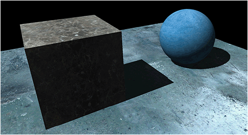

This tutorial will cover how to implement directional shadow maps using DirectX 11 and HLSL.
We will start with the code from the original shadow mapping tutorial number 41 and modify it to handle directional lighting.
Directional shadow maps are generally used to simulate shadows that would be created by sun light.
Uses include where sunlight comes through a window, or shadows for objects on terrain, and other lighting methods that require a directional light instead of positional.

To implement directional shadow maps, we will need to just make two changes to our already existing positional shadow map code.
The first change will be to modify the light shading code to handle directional lighting instead of positional lighting.
And the second change is to use an orthographic projection matrix instead of our regular projection matrix.
The orthographic matrix gives us a square projection which fits with directional lighting instead of a trapezoid style projection that positional lights use.
Framework
The framework remains the same for this tutorial as we have not added any additional classes.

We will start the code section of the tutorial by looking at the updated HLSL shadow shader.
Shadow.vs
The vertex shader has had the positional lighting code removed from it.
Just the code that directional lighting and shadow maps need has remained.
////////////////////////////////////////////////////////////////////////////////
// Filename: shadow.vs
////////////////////////////////////////////////////////////////////////////////
/////////////
// GLOBALS //
/////////////
cbuffer MatrixBuffer
{
matrix worldMatrix;
matrix viewMatrix;
matrix projectionMatrix;
matrix lightViewMatrix;
matrix lightProjectionMatrix;
};
//////////////
// TYPEDEFS //
//////////////
struct VertexInputType
{
float4 position : POSITION;
float2 tex : TEXCOORD0;
float3 normal : NORMAL;
};
struct PixelInputType
{
float4 position : SV_POSITION;
float2 tex : TEXCOORD0;
float3 normal : NORMAL;
float4 lightViewPosition : TEXCOORD1;
};
////////////////////////////////////////////////////////////////////////////////
// Vertex Shader
////////////////////////////////////////////////////////////////////////////////
PixelInputType ShadowVertexShader(VertexInputType input)
{
PixelInputType output;
// Change the position vector to be 4 units for proper matrix calculations.
input.position.w = 1.0f;
// Calculate the position of the vertex against the world, view, and projection matrices.
output.position = mul(input.position, worldMatrix);
output.position = mul(output.position, viewMatrix);
output.position = mul(output.position, projectionMatrix);
// Calculate the position of the vertice as viewed by the light source.
output.lightViewPosition = mul(input.position, worldMatrix);
output.lightViewPosition = mul(output.lightViewPosition, lightViewMatrix);
output.lightViewPosition = mul(output.lightViewPosition, lightProjectionMatrix);
// Store the texture coordinates for the pixel shader.
output.tex = input.tex;
// Calculate the normal vector against the world matrix only.
output.normal = mul(input.normal, (float3x3)worldMatrix);
// Normalize the normal vector.
output.normal = normalize(output.normal);
return output;
}
Shadow.ps
////////////////////////////////////////////////////////////////////////////////
// Filename: shadow.ps
////////////////////////////////////////////////////////////////////////////////
/////////////
// GLOBALS //
/////////////
Texture2D shaderTexture : register(t0);
Texture2D depthMapTexture : register(t1);
SamplerState SampleTypeClamp : register(s0);
SamplerState SampleTypeWrap : register(s1);
//////////////////////
// CONSTANT BUFFERS //
//////////////////////
We now use the light direction instead of light position for directional light calculations.
cbuffer LightBuffer
{
float4 ambientColor;
float4 diffuseColor;
float3 lightDirection;
float bias;
};
//////////////
// TYPEDEFS //
//////////////
struct PixelInputType
{
float4 position : SV_POSITION;
float2 tex : TEXCOORD0;
float3 normal : NORMAL;
float4 lightViewPosition : TEXCOORD1;
};
////////////////////////////////////////////////////////////////////////////////
// Pixel Shader
////////////////////////////////////////////////////////////////////////////////
float4 ShadowPixelShader(PixelInputType input) : SV_TARGET
{
float4 color;
float2 projectTexCoord;
float depthValue;
float lightDepthValue;
float lightIntensity;
float4 textureColor;
float3 lightDir;
The pixel shader will need to invert the light direction.
// Invert the light direction.
lightDir = -lightDirection;
// Set the default output color to the ambient light value for all pixels.
color = ambientColor;
// Calculate the projected texture coordinates.
projectTexCoord.x = input.lightViewPosition.x / input.lightViewPosition.w / 2.0f + 0.5f;
projectTexCoord.y = -input.lightViewPosition.y / input.lightViewPosition.w / 2.0f + 0.5f;
// Determine if the projected coordinates are in the 0 to 1 range. If it is then this pixel is inside the projected view port.
if((saturate(projectTexCoord.x) == projectTexCoord.x) && (saturate(projectTexCoord.y) == projectTexCoord.y))
{
// Sample the shadow map depth value from the depth texture using the sampler at the projected texture coordinate location.
depthValue = depthMapTexture.Sample(SampleTypeClamp, projectTexCoord).r;
// Calculate the depth of the light.
lightDepthValue = input.lightViewPosition.z / input.lightViewPosition.w;
// Subtract the bias from the lightDepthValue.
lightDepthValue = lightDepthValue - bias;
// Compare the depth of the shadow map value and the depth of the light to determine whether to shadow or to light this pixel.
// If the light is in front of the object then light the pixel, if not then shadow this pixel since an object (occluder) is casting a shadow on it.
if(lightDepthValue < depthValue)
{
We calculate directional lighting now instead of positional.
// Calculate the amount of light on this pixel.
lightIntensity = saturate(dot(input.normal, lightDir));
if(lightIntensity > 0.0f)
{
// Determine the final diffuse color based on the diffuse color and the amount of light intensity.
color += (diffuseColor * lightIntensity);
// Saturate the final light color.
color = saturate(color);
}
}
}
I have added an additional else clause to handle the case where objects are not inside the shadow map area.
If we find that a pixel is outside this region then we do just regular directional lighting.
Note that you can comment out this else clause to see exactly where your shadow map range begins and ends.
else
{
// If this is outside the area of shadow map range then draw things normally with regular lighting.
lightIntensity = saturate(dot(input.normal, lightDir));
if(lightIntensity > 0.0f)
{
color += (diffuseColor * lightIntensity);
color = saturate(color);
}
}
// Sample the pixel color from the texture using the sampler at this texture coordinate location.
textureColor = shaderTexture.Sample(SampleTypeWrap, input.tex);
// Combine the light and texture color.
color = color * textureColor;
return color;
}
Shadowshaderclass.h
The shadow map shader class has been modified to perform directional lighting instead of positional lighting.
////////////////////////////////////////////////////////////////////////////////
// Filename: shadowshaderclass.h
////////////////////////////////////////////////////////////////////////////////
#ifndef _SHADOWSHADERCLASS_H_
#define _SHADOWSHADERCLASS_H_
//////////////
// INCLUDES //
//////////////
#include <d3d11.h>
#include <d3dcompiler.h>
#include <directxmath.h>>
#include <fstream>
using namespace DirectX;
using namespace std;
////////////////////////////////////////////////////////////////////////////////
// Class name: ShadowShaderClass
////////////////////////////////////////////////////////////////////////////////
class ShadowShaderClass
{
private:
struct MatrixBufferType
{
XMMATRIX world;
XMMATRIX view;
XMMATRIX projection;
XMMATRIX lightView;
XMMATRIX lightProjection;
};
struct LightBufferType
{
XMFLOAT4 ambientColor;
XMFLOAT4 diffuseColor;
XMFLOAT3 lightDirection;
float bias;
};
public:
ShadowShaderClass();
ShadowShaderClass(const ShadowShaderClass&);
~ShadowShaderClass();
bool Initialize(ID3D11Device*, HWND);
void Shutdown();
bool Render(ID3D11DeviceContext*, int, XMMATRIX, XMMATRIX, XMMATRIX, XMMATRIX, XMMATRIX, ID3D11ShaderResourceView*, ID3D11ShaderResourceView*,
XMFLOAT4, XMFLOAT4, XMFLOAT3, float);
private:
bool InitializeShader(ID3D11Device*, HWND, WCHAR*, WCHAR*);
void ShutdownShader();
void OutputShaderErrorMessage(ID3D10Blob*, HWND, WCHAR*);
bool SetShaderParameters(ID3D11DeviceContext*, XMMATRIX, XMMATRIX, XMMATRIX, XMMATRIX, XMMATRIX, ID3D11ShaderResourceView*, ID3D11ShaderResourceView*,
XMFLOAT4, XMFLOAT4, XMFLOAT3, float);
void RenderShader(ID3D11DeviceContext*, int);
private:
ID3D11VertexShader* m_vertexShader;
ID3D11PixelShader* m_pixelShader;
ID3D11InputLayout* m_layout;
ID3D11Buffer* m_matrixBuffer;
ID3D11SamplerState* m_sampleStateClamp;
ID3D11SamplerState* m_sampleStateWrap;
ID3D11Buffer* m_lightBuffer;
};
#endif
Shadowshaderclass.cpp
////////////////////////////////////////////////////////////////////////////////
// Filename: shadowshaderclass.cpp
////////////////////////////////////////////////////////////////////////////////
#include "shadowshaderclass.h"
ShadowShaderClass::ShadowShaderClass()
{
m_vertexShader = 0;
m_pixelShader = 0;
m_layout = 0;
m_matrixBuffer = 0;
m_sampleStateClamp = 0;
m_sampleStateWrap = 0;
m_lightBuffer = 0;
}
ShadowShaderClass::ShadowShaderClass(const ShadowShaderClass& other)
{
}
ShadowShaderClass::~ShadowShaderClass()
{
}
bool ShadowShaderClass::Initialize(ID3D11Device* device, HWND hwnd)
{
wchar_t vsFilename[128], psFilename[128];
int error;
bool result;
// Set the filename of the vertex shader.
error = wcscpy_s(vsFilename, 128, L"../Engine/shadow.vs");
if(error != 0)
{
return false;
}
// Set the filename of the pixel shader.
error = wcscpy_s(psFilename, 128, L"../Engine/shadow.ps");
if(error != 0)
{
return false;
}
// Initialize the vertex and pixel shaders.
result = InitializeShader(device, hwnd, vsFilename, psFilename);
if(!result)
{
return false;
}
return true;
}
void ShadowShaderClass::Shutdown()
{
// Shutdown the vertex and pixel shaders as well as the related objects.
ShutdownShader();
return;
}
We now send in the direction of the light instead of the position of the light into the render functions.
bool ShadowShaderClass::Render(ID3D11DeviceContext* deviceContext, int indexCount, XMMATRIX worldMatrix, XMMATRIX viewMatrix, XMMATRIX projectionMatrix,
XMMATRIX lightViewMatrix, XMMATRIX lightProjectionMatrix, ID3D11ShaderResourceView* texture, ID3D11ShaderResourceView* depthMapTexture,
XMFLOAT4 ambientColor, XMFLOAT4 diffuseColor, XMFLOAT3 lightDirection, float bias)
{
bool result;
// Set the shader parameters that it will use for rendering.
result = SetShaderParameters(deviceContext, worldMatrix, viewMatrix, projectionMatrix, lightViewMatrix, lightProjectionMatrix, texture, depthMapTexture,
ambientColor, diffuseColor, lightDirection, bias);
if(!result)
{
return false;
}
// Now render the prepared buffers with the shader.
RenderShader(deviceContext, indexCount);
return true;
}
We now only need a single light buffer in the InitializeShader function since the positional one for the vertex shader is no longer required.
bool ShadowShaderClass::InitializeShader(ID3D11Device* device, HWND hwnd, WCHAR* vsFilename, WCHAR* psFilename)
{
HRESULT result;
ID3D10Blob* errorMessage;
ID3D10Blob* vertexShaderBuffer;
ID3D10Blob* pixelShaderBuffer;
D3D11_INPUT_ELEMENT_DESC polygonLayout[3];
unsigned int numElements;
D3D11_BUFFER_DESC matrixBufferDesc;
D3D11_SAMPLER_DESC samplerDesc;
D3D11_BUFFER_DESC lightBufferDesc;
// Initialize the pointers this function will use to null.
errorMessage = 0;
vertexShaderBuffer = 0;
pixelShaderBuffer = 0;
// Compile the vertex shader code.
result = D3DCompileFromFile(vsFilename, NULL, NULL, "ShadowVertexShader", "vs_5_0", D3D10_SHADER_ENABLE_STRICTNESS, 0,
&vertexShaderBuffer, &errorMessage);
if(FAILED(result))
{
// If the shader failed to compile it should have writen something to the error message.
if(errorMessage)
{
OutputShaderErrorMessage(errorMessage, hwnd, vsFilename);
}
// If there was nothing in the error message then it simply could not find the shader file itself.
else
{
MessageBox(hwnd, vsFilename, L"Missing Shader File", MB_OK);
}
return false;
}
// Compile the pixel shader code.
result = D3DCompileFromFile(psFilename, NULL, NULL, "ShadowPixelShader", "ps_5_0", D3D10_SHADER_ENABLE_STRICTNESS, 0,
&pixelShaderBuffer, &errorMessage);
if(FAILED(result))
{
// If the shader failed to compile it should have writen something to the error message.
if(errorMessage)
{
OutputShaderErrorMessage(errorMessage, hwnd, psFilename);
}
// If there was nothing in the error message then it simply could not find the file itself.
else
{
MessageBox(hwnd, psFilename, L"Missing Shader File", MB_OK);
}
return false;
}
// Create the vertex shader from the buffer.
result = device->CreateVertexShader(vertexShaderBuffer->GetBufferPointer(), vertexShaderBuffer->GetBufferSize(), NULL, &m_vertexShader);
if(FAILED(result))
{
return false;
}
// Create the pixel shader from the buffer.
result = device->CreatePixelShader(pixelShaderBuffer->GetBufferPointer(), pixelShaderBuffer->GetBufferSize(), NULL, &m_pixelShader);
if(FAILED(result))
{
return false;
}
// Create the vertex input layout description.
polygonLayout[0].SemanticName = "POSITION";
polygonLayout[0].SemanticIndex = 0;
polygonLayout[0].Format = DXGI_FORMAT_R32G32B32_FLOAT;
polygonLayout[0].InputSlot = 0;
polygonLayout[0].AlignedByteOffset = 0;
polygonLayout[0].InputSlotClass = D3D11_INPUT_PER_VERTEX_DATA;
polygonLayout[0].InstanceDataStepRate = 0;
polygonLayout[1].SemanticName = "TEXCOORD";
polygonLayout[1].SemanticIndex = 0;
polygonLayout[1].Format = DXGI_FORMAT_R32G32_FLOAT;
polygonLayout[1].InputSlot = 0;
polygonLayout[1].AlignedByteOffset = D3D11_APPEND_ALIGNED_ELEMENT;
polygonLayout[1].InputSlotClass = D3D11_INPUT_PER_VERTEX_DATA;
polygonLayout[1].InstanceDataStepRate = 0;
polygonLayout[2].SemanticName = "NORMAL";
polygonLayout[2].SemanticIndex = 0;
polygonLayout[2].Format = DXGI_FORMAT_R32G32B32_FLOAT;
polygonLayout[2].InputSlot = 0;
polygonLayout[2].AlignedByteOffset = D3D11_APPEND_ALIGNED_ELEMENT;
polygonLayout[2].InputSlotClass = D3D11_INPUT_PER_VERTEX_DATA;
polygonLayout[2].InstanceDataStepRate = 0;
// Get a count of the elements in the layout.
numElements = sizeof(polygonLayout) / sizeof(polygonLayout[0]);
// Create the vertex input layout.
result = device->CreateInputLayout(polygonLayout, numElements, vertexShaderBuffer->GetBufferPointer(), vertexShaderBuffer->GetBufferSize(), &m_layout);
if(FAILED(result))
{
return false;
}
// Release the vertex shader buffer and pixel shader buffer since they are no longer needed.
vertexShaderBuffer->Release();
vertexShaderBuffer = 0;
pixelShaderBuffer->Release();
pixelShaderBuffer = 0;
// Setup the description of the dynamic matrix constant buffer that is in the vertex shader.
matrixBufferDesc.Usage = D3D11_USAGE_DYNAMIC;
matrixBufferDesc.ByteWidth = sizeof(MatrixBufferType);
matrixBufferDesc.BindFlags = D3D11_BIND_CONSTANT_BUFFER;
matrixBufferDesc.CPUAccessFlags = D3D11_CPU_ACCESS_WRITE;
matrixBufferDesc.MiscFlags = 0;
matrixBufferDesc.StructureByteStride = 0;
// Create the constant buffer pointer so we can access the vertex shader constant buffer from within this class.
result = device->CreateBuffer(&matrixBufferDesc, NULL, &m_matrixBuffer);
if(FAILED(result))
{
return false;
}
// Create a clamp texture sampler state description.
samplerDesc.Filter = D3D11_FILTER_MIN_MAG_MIP_LINEAR;
samplerDesc.AddressU = D3D11_TEXTURE_ADDRESS_CLAMP;
samplerDesc.AddressV = D3D11_TEXTURE_ADDRESS_CLAMP;
samplerDesc.AddressW = D3D11_TEXTURE_ADDRESS_CLAMP;
samplerDesc.MipLODBias = 0.0f;
samplerDesc.MaxAnisotropy = 1;
samplerDesc.ComparisonFunc = D3D11_COMPARISON_ALWAYS;
samplerDesc.BorderColor[0] = 0;
samplerDesc.BorderColor[1] = 0;
samplerDesc.BorderColor[2] = 0;
samplerDesc.BorderColor[3] = 0;
samplerDesc.MinLOD = 0;
samplerDesc.MaxLOD = D3D11_FLOAT32_MAX;
// Create the clamp texture sampler state.
result = device->CreateSamplerState(&samplerDesc, &m_sampleStateClamp);
if(FAILED(result))
{
return false;
}
// Create a wrap texture sampler state description.
samplerDesc.Filter = D3D11_FILTER_MIN_MAG_MIP_LINEAR;
samplerDesc.AddressU = D3D11_TEXTURE_ADDRESS_WRAP;
samplerDesc.AddressV = D3D11_TEXTURE_ADDRESS_WRAP;
samplerDesc.AddressW = D3D11_TEXTURE_ADDRESS_WRAP;
samplerDesc.MipLODBias = 0.0f;
samplerDesc.MaxAnisotropy = 1;
samplerDesc.ComparisonFunc = D3D11_COMPARISON_ALWAYS;
samplerDesc.BorderColor[0] = 0;
samplerDesc.BorderColor[1] = 0;
samplerDesc.BorderColor[2] = 0;
samplerDesc.BorderColor[3] = 0;
samplerDesc.MinLOD = 0;
samplerDesc.MaxLOD = D3D11_FLOAT32_MAX;
// Create the wrap texture sampler state.
result = device->CreateSamplerState(&samplerDesc, &m_sampleStateWrap);
if(FAILED(result))
{
return false;
}
// Setup the description of the light dynamic constant buffer that is in the pixel shader.
lightBufferDesc.Usage = D3D11_USAGE_DYNAMIC;
lightBufferDesc.ByteWidth = sizeof(LightBufferType);
lightBufferDesc.BindFlags = D3D11_BIND_CONSTANT_BUFFER;
lightBufferDesc.CPUAccessFlags = D3D11_CPU_ACCESS_WRITE;
lightBufferDesc.MiscFlags = 0;
lightBufferDesc.StructureByteStride = 0;
// Create the constant buffer pointer so we can access the pixel shader constant buffer from within this class.
result = device->CreateBuffer(&lightBufferDesc, NULL, &m_lightBuffer);
if(FAILED(result))
{
return false;
}
return true;
}
void ShadowShaderClass::ShutdownShader()
{
// Release the light constant buffer.
if(m_lightBuffer)
{
m_lightBuffer->Release();
m_lightBuffer = 0;
}
// Release the wrap sampler state.
if(m_sampleStateWrap)
{
m_sampleStateWrap->Release();
m_sampleStateWrap = 0;
}
// Release the clamp sampler state.
if(m_sampleStateClamp)
{
m_sampleStateClamp->Release();
m_sampleStateClamp = 0;
}
// Release the matrix constant buffer.
if(m_matrixBuffer)
{
m_matrixBuffer->Release();
m_matrixBuffer = 0;
}
// Release the layout.
if(m_layout)
{
m_layout->Release();
m_layout = 0;
}
// Release the pixel shader.
if(m_pixelShader)
{
m_pixelShader->Release();
m_pixelShader = 0;
}
// Release the vertex shader.
if(m_vertexShader)
{
m_vertexShader->Release();
m_vertexShader = 0;
}
return;
}
void ShadowShaderClass::OutputShaderErrorMessage(ID3D10Blob* errorMessage, HWND hwnd, WCHAR* shaderFilename)
{
char* compileErrors;
unsigned long long bufferSize, i;
ofstream fout;
// Get a pointer to the error message text buffer.
compileErrors = (char*)(errorMessage->GetBufferPointer());
// Get the length of the message.
bufferSize = errorMessage->GetBufferSize();
// Open a file to write the error message to.
fout.open("shader-error.txt");
// Write out the error message.
for(i=0; i<bufferSize; i++)
{
fout << compileErrors[i];
}
// Close the file.
fout.close();
// Release the error message.
errorMessage->Release();
errorMessage = 0;
// Pop a message up on the screen to notify the user to check the text file for compile errors.
MessageBox(hwnd, L"Error compiling shader. Check shader-error.txt for message.", shaderFilename, MB_OK);
return;
}
bool ShadowShaderClass::SetShaderParameters(ID3D11DeviceContext* deviceContext, XMMATRIX worldMatrix, XMMATRIX viewMatrix, XMMATRIX projectionMatrix,
XMMATRIX lightViewMatrix, XMMATRIX lightProjectionMatrix, ID3D11ShaderResourceView* texture, ID3D11ShaderResourceView* depthMapTexture,
XMFLOAT4 ambientColor, XMFLOAT4 diffuseColor, XMFLOAT3 lightDirection, float bias)
{
HRESULT result;
D3D11_MAPPED_SUBRESOURCE mappedResource;
MatrixBufferType* dataPtr;
unsigned int bufferNumber;
LightBufferType* dataPtr2;
// Transpose the matrices to prepare them for the shader.
worldMatrix = XMMatrixTranspose(worldMatrix);
viewMatrix = XMMatrixTranspose(viewMatrix);
projectionMatrix = XMMatrixTranspose(projectionMatrix);
lightViewMatrix = XMMatrixTranspose(lightViewMatrix);
lightProjectionMatrix = XMMatrixTranspose(lightProjectionMatrix);
// Lock the constant buffer so it can be written to.
result = deviceContext->Map(m_matrixBuffer, 0, D3D11_MAP_WRITE_DISCARD, 0, &mappedResource);
if(FAILED(result))
{
return false;
}
// Get a pointer to the data in the constant buffer.
dataPtr = (MatrixBufferType*)mappedResource.pData;
// Copy the matrices into the constant buffer.
dataPtr->world = worldMatrix;
dataPtr->view = viewMatrix;
dataPtr->projection = projectionMatrix;
dataPtr->lightView = lightViewMatrix;
dataPtr->lightProjection = lightProjectionMatrix;
// Unlock the constant buffer.
deviceContext->Unmap(m_matrixBuffer, 0);
// Set the position of the constant buffer in the vertex shader.
bufferNumber = 0;
// Finally set the constant buffer in the vertex shader with the updated values.
deviceContext->VSSetConstantBuffers(bufferNumber, 1, &m_matrixBuffer);
// Lock the light constant buffer so it can be written to.
result = deviceContext->Map(m_lightBuffer, 0, D3D11_MAP_WRITE_DISCARD, 0, &mappedResource);
if(FAILED(result))
{
return false;
}
// Get a pointer to the data in the constant buffer.
dataPtr2 = (LightBufferType*)mappedResource.pData;
The light direction is set instead of the light position.
// Copy the lighting variables into the constant buffer.
dataPtr2->ambientColor = ambientColor;
dataPtr2->diffuseColor = diffuseColor;
dataPtr2->lightDirection = lightDirection;
dataPtr2->bias = bias;
// Unlock the constant buffer.
deviceContext->Unmap(m_lightBuffer, 0);
// Set the position of the light constant buffer in the pixel shader.
bufferNumber = 0;
// Finally set the light constant buffer in the pixel shader with the updated values.
deviceContext->PSSetConstantBuffers(bufferNumber, 1, &m_lightBuffer);
// Set shader texture resources in the pixel shader.
deviceContext->PSSetShaderResources(0, 1, &texture);
deviceContext->PSSetShaderResources(1, 1, &depthMapTexture);
return true;
}
void ShadowShaderClass::RenderShader(ID3D11DeviceContext* deviceContext, int indexCount)
{
// Set the vertex input layout.
deviceContext->IASetInputLayout(m_layout);
// Set the vertex and pixel shaders that will be used to render this triangle.
deviceContext->VSSetShader(m_vertexShader, NULL, 0);
deviceContext->PSSetShader(m_pixelShader, NULL, 0);
// Set the sampler state in the pixel shader.
deviceContext->PSSetSamplers(0, 1, &m_sampleStateClamp);
deviceContext->PSSetSamplers(1, 1, &m_sampleStateWrap);
// Render the geometry.
deviceContext->DrawIndexed(indexCount, 0, 0);
return;
}
Lightclass.h
The light class has been modified to use a square orthographic projection instead of a regular trapezoid projection.
////////////////////////////////////////////////////////////////////////////////
// Filename: lightclass.h
////////////////////////////////////////////////////////////////////////////////
#ifndef _LIGHTCLASS_H_
#define _LIGHTCLASS_H_
//////////////
// INCLUDES //
//////////////
#include <directxmath.h>
using namespace DirectX;
////////////////////////////////////////////////////////////////////////////////
// Class name: LightClass
////////////////////////////////////////////////////////////////////////////////
class LightClass
{
public:
LightClass();
LightClass(const LightClass&);
~LightClass();
void SetAmbientColor(float, float, float, float);
void SetDiffuseColor(float, float, float, float);
void SetDirection(float, float, float);
void SetPosition(float, float, float);
void SetLookAt(float, float, float);
XMFLOAT4 GetAmbientColor();
XMFLOAT4 GetDiffuseColor();
XMFLOAT3 GetDirection();
XMFLOAT3 GetPosition();
void GenerateViewMatrix();
void GenerateProjectionMatrix(float, float);
void GetViewMatrix(XMMATRIX&);
void GetProjectionMatrix(XMMATRIX&);
void GenerateOrthoMatrix(float, float, float);
void GetOrthoMatrix(XMMATRIX&);
private:
XMFLOAT4 m_ambientColor;
XMFLOAT4 m_diffuseColor;
XMFLOAT3 m_direction;
XMFLOAT3 m_position;
XMFLOAT3 m_lookAt;
XMMATRIX m_viewMatrix;
XMMATRIX m_projectionMatrix;
XMMATRIX m_orthoMatrix;
};
#endif
Lightclass.cpp
////////////////////////////////////////////////////////////////////////////////
// Filename: lightclass.cpp
////////////////////////////////////////////////////////////////////////////////
#include "lightclass.h"
LightClass::LightClass()
{
}
LightClass::LightClass(const LightClass& other)
{
}
LightClass::~LightClass()
{
}
void LightClass::SetAmbientColor(float red, float green, float blue, float alpha)
{
m_ambientColor = XMFLOAT4(red, green, blue, alpha);
return;
}
void LightClass::SetDiffuseColor(float red, float green, float blue, float alpha)
{
m_diffuseColor = XMFLOAT4(red, green, blue, alpha);
return;
}
void LightClass::SetDirection(float x, float y, float z)
{
m_direction = XMFLOAT3(x, y, z);
return;
}
void LightClass::SetPosition(float x, float y, float z)
{
m_position = XMFLOAT3(x, y, z);
return;
}
void LightClass::SetLookAt(float x, float y, float z)
{
m_lookAt = XMFLOAT3(x, y, z);
return;
}
XMFLOAT4 LightClass::GetAmbientColor()
{
return m_ambientColor;
}
XMFLOAT4 LightClass::GetDiffuseColor()
{
return m_diffuseColor;
}
XMFLOAT3 LightClass::GetDirection()
{
return m_direction;
}
XMFLOAT3 LightClass::GetPosition()
{
return m_position;
}
void LightClass::GenerateViewMatrix()
{
XMFLOAT3 up;
XMVECTOR positionVector, lookAtVector, upVector;
// Setup the vector that points upwards.
up.x = 0.0f;
up.y = 1.0f;
up.z = 0.0f;
// Load the XMFLOAT3 into XMVECTOR.
positionVector = XMLoadFloat3(&m_position);
lookAtVector = XMLoadFloat3(&m_lookAt);
upVector = XMLoadFloat3(&up);
// Create the view matrix from the three vectors.
m_viewMatrix = XMMatrixLookAtLH(positionVector, lookAtVector, upVector);
return;
}
void LightClass::GenerateProjectionMatrix(float screenDepth, float screenNear)
{
float fieldOfView, screenAspect;
// Setup field of view and screen aspect for a square light source.
fieldOfView = 3.14159265358979323846f / 2.0f;
screenAspect = 1.0f;
// Create the projection matrix for the light.
m_projectionMatrix = XMMatrixPerspectiveFovLH(fieldOfView, screenAspect, screenNear, screenDepth);
return;
}
void LightClass::GetViewMatrix(XMMATRIX& viewMatrix)
{
viewMatrix = m_viewMatrix;
return;
}
void LightClass::GetProjectionMatrix(XMMATRIX& projectionMatrix)
{
projectionMatrix = m_projectionMatrix;
return;
}
We have added code to generate an orthographic projection matrix.
This will create a square projection matrix to simulate how directional light would illuminate an area.
void LightClass::GenerateOrthoMatrix(float width, float nearPlane, float depthPlane)
{
// Create the orthographic matrix for the light.
m_orthoMatrix = XMMatrixOrthographicLH(width, width, nearPlane, depthPlane);
return;
}
void LightClass::GetOrthoMatrix(XMMATRIX& orthoMatrix)
{
orthoMatrix = m_orthoMatrix;
return;
}
Applicationclass.h
////////////////////////////////////////////////////////////////////////////////
// Filename: applicationclass.h
////////////////////////////////////////////////////////////////////////////////
#ifndef _APPLICATIONCLASS_H_
#define _APPLICATIONCLASS_H_
/////////////
// GLOBALS //
/////////////
const bool FULL_SCREEN = false;
const bool VSYNC_ENABLED = true;
const float SCREEN_DEPTH = 100.0f;
const float SCREEN_NEAR = 1.0f;
const int SHADOWMAP_WIDTH = 1024;
const int SHADOWMAP_HEIGHT = 1024;
Two new globals were added to give individual control over the depth range of the shadow map.
const float SHADOWMAP_DEPTH = 50.0f;
const float SHADOWMAP_NEAR = 1.0f;
///////////////////////
// MY CLASS INCLUDES //
///////////////////////
#include "d3dclass.h"
#include "inputclass.h"
#include "cameraclass.h"
#include "modelclass.h"
#include "lightclass.h"
#include "rendertextureclass.h"
#include "depthshaderclass.h"
#include "shadowshaderclass.h"
////////////////////////////////////////////////////////////////////////////////
// Class name: ApplicationClass
////////////////////////////////////////////////////////////////////////////////
class ApplicationClass
{
public:
ApplicationClass();
ApplicationClass(const ApplicationClass&);
~ApplicationClass();
bool Initialize(int, int, HWND);
void Shutdown();
bool Frame(InputClass*);
private:
bool RenderDepthToTexture();
bool Render();
private:
D3DClass* m_Direct3D;
CameraClass* m_Camera;
ModelClass *m_CubeModel, *m_SphereModel, *m_GroundModel;
LightClass* m_Light;
RenderTextureClass* m_RenderTexture;
DepthShaderClass* m_DepthShader;
ShadowShaderClass* m_ShadowShader;
float m_shadowMapBias;
};
#endif
Applicationclass.cpp
////////////////////////////////////////////////////////////////////////////////
// Filename: applicationclass.cpp
////////////////////////////////////////////////////////////////////////////////
#include "applicationclass.h"
ApplicationClass::ApplicationClass()
{
m_Direct3D = 0;
m_Camera = 0;
m_CubeModel = 0;
m_SphereModel = 0;
m_GroundModel = 0;
m_Light = 0;
m_RenderTexture = 0;
m_DepthShader = 0;
m_ShadowShader = 0;
}
ApplicationClass::ApplicationClass(const ApplicationClass& other)
{
}
ApplicationClass::~ApplicationClass()
{
}
bool ApplicationClass::Initialize(int screenWidth, int screenHeight, HWND hwnd)
{
char modelFilename[128], textureFilename[128];
bool result;
// Create and initialize the Direct3D object.
m_Direct3D = new D3DClass;
result = m_Direct3D->Initialize(screenWidth, screenHeight, VSYNC_ENABLED, hwnd, FULL_SCREEN, SCREEN_DEPTH, SCREEN_NEAR);
if(!result)
{
MessageBox(hwnd, L"Could not initialize Direct3D.", L"Error", MB_OK);
return false;
}
// Create and initialize the camera object.
m_Camera = new CameraClass;
m_Camera->SetPosition(0.0f, 7.0f, -10.0f);
m_Camera->SetRotation(35.0f, 0.0f, 0.0f);
m_Camera->Render();
// Create and initialize the cube model object.
m_CubeModel = new ModelClass;
strcpy_s(modelFilename, "../Engine/data/cube.txt");
strcpy_s(textureFilename, "../Engine/data/wall01.tga");
result = m_CubeModel->Initialize(m_Direct3D->GetDevice(), m_Direct3D->GetDeviceContext(), modelFilename, textureFilename);
if(!result)
{
MessageBox(hwnd, L"Could not initialize the cube model object.", L"Error", MB_OK);
return false;
}
// Create and initialize the sphere model object.
m_SphereModel = new ModelClass;
strcpy_s(modelFilename, "../Engine/data/sphere.txt");
strcpy_s(textureFilename, "../Engine/data/ice.tga");
result = m_SphereModel->Initialize(m_Direct3D->GetDevice(), m_Direct3D->GetDeviceContext(), modelFilename, textureFilename);
if(!result)
{
MessageBox(hwnd, L"Could not initialize the sphere model object.", L"Error", MB_OK);
return false;
}
// Create and initialize the ground model object.
m_GroundModel = new ModelClass;
strcpy_s(modelFilename, "../Engine/data/plane01.txt");
strcpy_s(textureFilename, "../Engine/data/metal001.tga");
result = m_GroundModel->Initialize(m_Direct3D->GetDevice(), m_Direct3D->GetDeviceContext(), modelFilename, textureFilename);
if(!result)
{
MessageBox(hwnd, L"Could not initialize the ground model object.", L"Error", MB_OK);
return false;
}
// Create and initialize the light object.
m_Light = new LightClass;
m_Light->SetAmbientColor(0.15f, 0.15f, 0.15f, 1.0f);
m_Light->SetDiffuseColor(1.0f, 1.0f, 1.0f, 1.0f);
An orthographic matrix is now generated for the directional light instead of the positional projection matrix.
m_Light->GenerateOrthoMatrix(20.0f, SHADOWMAP_NEAR, SHADOWMAP_DEPTH);
The shadow map is initialized with the two new globals that control the depth range.
// Create and initialize the render to texture object.
m_RenderTexture = new RenderTextureClass;
result = m_RenderTexture->Initialize(m_Direct3D->GetDevice(), SHADOWMAP_WIDTH, SHADOWMAP_HEIGHT, SHADOWMAP_DEPTH, SHADOWMAP_NEAR, 1);
if(!result)
{
MessageBox(hwnd, L"Could not initialize the render texture object.", L"Error", MB_OK);
return false;
}
// Create and initialize the depth shader object.
m_DepthShader = new DepthShaderClass;
result = m_DepthShader->Initialize(m_Direct3D->GetDevice(), hwnd);
if(!result)
{
MessageBox(hwnd, L"Could not initialize the depth shader object.", L"Error", MB_OK);
return false;
}
// Create and initialize the shadow shader object.
m_ShadowShader = new ShadowShaderClass;
result = m_ShadowShader->Initialize(m_Direct3D->GetDevice(), hwnd);
if(!result)
{
MessageBox(hwnd, L"Could not initialize the shadow shader object.", L"Error", MB_OK);
return false;
}
// Set the shadow map bias to fix the floating point precision issues (shadow acne/lines artifacts).
m_shadowMapBias = 0.0022f;
return true;
}
void ApplicationClass::Shutdown()
{
// Release the shadow shader object.
if(m_ShadowShader)
{
m_ShadowShader->Shutdown();
delete m_ShadowShader;
m_ShadowShader = 0;
}
// Release the depth shader object.
if(m_DepthShader)
{
m_DepthShader->Shutdown();
delete m_DepthShader;
m_DepthShader = 0;
}
// Release the render texture object.
if(m_RenderTexture)
{
m_RenderTexture->Shutdown();
delete m_RenderTexture;
m_RenderTexture = 0;
}
// Release the light object.
if(m_Light)
{
delete m_Light;
m_Light = 0;
}
// Release the ground model object.
if(m_GroundModel)
{
m_GroundModel->Shutdown();
delete m_GroundModel;
m_GroundModel = 0;
}
// Release the sphere model object.
if(m_SphereModel)
{
m_SphereModel->Shutdown();
delete m_SphereModel;
m_SphereModel = 0;
}
// Release the cube model object.
if(m_CubeModel)
{
m_CubeModel->Shutdown();
delete m_CubeModel;
m_CubeModel = 0;
}
// Release the camera object.
if(m_Camera)
{
delete m_Camera;
m_Camera = 0;
}
// Release the Direct3D object.
if(m_Direct3D)
{
m_Direct3D->Shutdown();
delete m_Direct3D;
m_Direct3D = 0;
}
return;
}
bool ApplicationClass::Frame(InputClass* Input)
{
static float lightAngle = 270.0f;
float radians;
static float lightPosX = 9.0f;
float frameTime;
bool result;
// Check if the user pressed escape and wants to exit the application.
if(Input->IsEscapePressed())
{
return false;
}
Each frame we now rotate a directional light from 270 degrees to 90 degrees to simulate sun light movement.
// Set the frame time manually assumming 60 fps.
frameTime = 10.0f;
// Update the position of the light each frame.
lightPosX -= 0.003f * frameTime;
// Update the angle of the light each frame.
lightAngle -= 0.03f * frameTime;
if(lightAngle < 90.0f)
{
lightAngle = 270.0f;
// Reset the light position also.
lightPosX = 9.0f;
}
radians = lightAngle * 0.0174532925f;
// Update the direction of the light.
m_Light->SetDirection(sinf(radians), cosf(radians), 0.0f);
Also, each frame we now simulate a sun light rotation using the position and lookat.
As a directional light has no position, we have to just create a simulated version of it by polarizing the position and lookat X coordinate.
If your light needs to cover more distance then just increase the Y coordinate distance between the position and the lookat.
// Set the position and lookat for the light.
m_Light->SetPosition(lightPosX, 8.0f, -0.1f);
m_Light->SetLookAt(-lightPosX, 0.0f, 0.0f);
m_Light->GenerateViewMatrix();
// Render the scene depth of the first light to the render texture.
result = RenderDepthToTexture();
if(!result)
{
return false;
}
// Render the graphics scene.
result = Render();
if(!result)
{
return false;
}
return true;
}
In the RenderDepthToTexture function we now change everything from a projection matrix to an orthographic matrix.
bool ApplicationClass::RenderDepthToTexture()
{
XMMATRIX translateMatrix, lightViewMatrix, lightOrthoMatrix;
bool result;
// Set the render target to be the render to texture. Also clear the render to texture.
m_RenderTexture->SetRenderTarget(m_Direct3D->GetDeviceContext());
m_RenderTexture->ClearRenderTarget(m_Direct3D->GetDeviceContext(), 0.0f, 0.0f, 0.0f, 1.0f);
// Get the view and orthographic matrices from the light object.
m_Light->GetViewMatrix(lightViewMatrix);
m_Light->GetOrthoMatrix(lightOrthoMatrix);
// Setup the translation matrix for the cube model.
translateMatrix = XMMatrixTranslation(-2.0f, 2.0f, 0.0f);
// Render the cube model using the depth shader.
m_CubeModel->Render(m_Direct3D->GetDeviceContext());
result = m_DepthShader->Render(m_Direct3D->GetDeviceContext(), m_CubeModel->GetIndexCount(), translateMatrix, lightViewMatrix, lightOrthoMatrix);
if(!result)
{
return false;
}
// Setup the translation matrix for the sphere model.
translateMatrix = XMMatrixTranslation(2.0f, 2.0f, 0.0f);
// Render the sphere model using the depth shader.
m_SphereModel->Render(m_Direct3D->GetDeviceContext());
result = m_DepthShader->Render(m_Direct3D->GetDeviceContext(), m_SphereModel->GetIndexCount(), translateMatrix, lightViewMatrix, lightOrthoMatrix);
if(!result)
{
return false;
}
// Setup the translation matrix for the ground model.
translateMatrix = XMMatrixTranslation(0.0f, 1.0f, 0.0f);
// Render the ground model using the depth shader.
m_GroundModel->Render(m_Direct3D->GetDeviceContext());
result = m_DepthShader->Render(m_Direct3D->GetDeviceContext(), m_GroundModel->GetIndexCount(), translateMatrix, lightViewMatrix, lightOrthoMatrix);
if(!result)
{
return false;
}
// Reset the render target back to the original back buffer and not the render to texture anymore. Also reset the viewport back to the original.
m_Direct3D->SetBackBufferRenderTarget();
m_Direct3D->ResetViewport();
return true;
}
In the Render function we also change everything to use an orthographic matrix instead of a projection matrix.
The shader render functions also now take the light direction as opposed to previously using the light position.
bool ApplicationClass::Render()
{
XMMATRIX worldMatrix, viewMatrix, projectionMatrix, lightViewMatrix, lightOrthoMatrix;
bool result;
// Clear the buffers to begin the scene.
m_Direct3D->BeginScene(0.0f, 0.0f, 0.0f, 1.0f);
// Get the world, view, and projection matrices from the camera and d3d objects.
m_Direct3D->GetWorldMatrix(worldMatrix);
m_Camera->GetViewMatrix(viewMatrix);
m_Direct3D->GetProjectionMatrix(projectionMatrix);
// Get the view and projection matrices from the first light.
m_Light->GetViewMatrix(lightViewMatrix);
m_Light->GetOrthoMatrix(lightOrthoMatrix);
// Setup the translation matrix for the cube model.
worldMatrix = XMMatrixTranslation(-2.0f, 2.0f, 0.0f);
// Render the cube model using the shadow shader.
m_CubeModel->Render(m_Direct3D->GetDeviceContext());
result = m_ShadowShader->Render(m_Direct3D->GetDeviceContext(), m_CubeModel->GetIndexCount(), worldMatrix, viewMatrix, projectionMatrix, lightViewMatrix, lightOrthoMatrix,
m_CubeModel->GetTexture(), m_RenderTexture->GetShaderResourceView(), m_Light->GetAmbientColor(), m_Light->GetDiffuseColor(), m_Light->GetDirection(), m_shadowMapBias);
if(!result)
{
return false;
}
// Setup the translation matrix for the sphere model.
worldMatrix = XMMatrixTranslation(2.0f, 2.0f, 0.0f);
// Render the sphere model using the shadow shader.
m_SphereModel->Render(m_Direct3D->GetDeviceContext());
result = m_ShadowShader->Render(m_Direct3D->GetDeviceContext(), m_SphereModel->GetIndexCount(), worldMatrix, viewMatrix, projectionMatrix, lightViewMatrix, lightOrthoMatrix,
m_SphereModel->GetTexture(), m_RenderTexture->GetShaderResourceView(), m_Light->GetAmbientColor(), m_Light->GetDiffuseColor(), m_Light->GetDirection(), m_shadowMapBias);
if(!result)
{
return false;
}
// Setup the translation matrix for the ground model.
worldMatrix = XMMatrixTranslation(0.0f, 1.0f, 0.0f);
// Render the ground model using the shadow shader.
m_GroundModel->Render(m_Direct3D->GetDeviceContext());
result = m_ShadowShader->Render(m_Direct3D->GetDeviceContext(), m_GroundModel->GetIndexCount(), worldMatrix, viewMatrix, projectionMatrix, lightViewMatrix, lightOrthoMatrix,
m_GroundModel->GetTexture(), m_RenderTexture->GetShaderResourceView(), m_Light->GetAmbientColor(), m_Light->GetDiffuseColor(), m_Light->GetDirection(), m_shadowMapBias);
if(!result)
{
return false;
}
// Present the rendered scene to the screen.
m_Direct3D->EndScene();
return true;
}
Summary
Directional shadow maps can now be produced by using directional light and orthographic projections.
To Do Exercises
1. Recompile and run the code.
2. Modify the direction, position, and lookat in the Frame function to see the effect.
Source Code
Source Code and Data Files: dx11win10tut43_src.zip